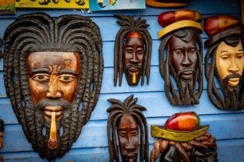

Origem do Reggae
O reggae surgiu na Jamaica, uma ilha situada na América Central, durante o período de colonização do país. O surgimento do gênero se deu pela mistura de ritmos africanos, indígenas e europeus. O termo reggae teve origem na sonoridade produzida pela guitarra: o “re” remete ao movimento do toque no instrumento feito para baixo, enquanto o “gae”, à movimentação para cima.
Evolução dos estilos de reggae
A história do surgimento e da evolução do reggae teve início no século XX, na década de 1950, período em que o estilo musical estadunidense Rhythm and Blues (R&B) estava em alta. Nessa época, na cidade jamaicana de Kingston, atual capital do país, os jamaicanos ouviam muito as músicas desse gênero e começaram a misturá-lo aos sons produzidos pelos tambores em seus rituais religiosos.
Essa mistura deu origem ao primeiro estilo musical da evolução do reggae, o mento. Ele pode ser reconhecido enquanto um tipo de música folclórica, pois contém características de seu povo. O resultado era uma mistura do vocal do blues com a musicalidade dos rituais rastafári.
Os sons dos tambores ganharam espaço no rádio e provocaram um movimento de valorização da identidade cultural da ilha. Após a independência da Jamaica, foi criada uma batida musical mais acelerada que o mento, chamada de ska. Posteriormente, com influências das famosas bandas estadunidenses de rock, surgiu então o rocksteady.
Por fim, surgiu o reggae roots, considerado o período de ouro desse processo evolutivo da música jamaicana. Ele nasceu enquanto um estilo musical que retratava as problemáticas da modernização do país. Desde então, o reggae passou a incluir em suas canções temas como desemprego, falta de moradia e condições de trabalho precárias.
O reggae dancehall, uma versão eletrônica, é um dos mais recentes e populares hoje em dia. Esse estilo segue as tendências da indústria musical norte-americana, isto é, produz canções que estão de acordo com as demandas do mercado. Apesar das transformações do reggae, o estilo não deixou de manter atributos da identidade do povo jamaicano.

A filosofia do movimento rasta consiste na condução por Jah a um lugar perfeito, conhecido como Zion, o paraíso dos rastas. O mundo e a realidade capitalista são a Babilônia no rastafári. Com o rastafári, as músicas do reggae alimentam o sentimento de descontentamento acerca das dificuldades sociais.
Características do reggae
As características do reggae foram construídas ao longo do tempo no processo de trocas culturais e da heterogeneidade dos povos que habitaram e habitam a Jamaica. Para além do entretenimento e do gênero musical, o reggae produz sentidos de pertencimento, de resistência, de luta e de denúncia.
As produções musicais conduzem narrativas que falam da realidade, que, muitas vezes, é marcada por uma violência a determinados corpos e condições sociais. As cores que representam tanto o reggae quanto o rastafári são o verde, amarelo e vermelho. Elas compõem a bandeira da Etiópia. Os instrumentos principais do ritmo são a bateria, o baixo e a guitarra.
Algumas letras musicais do reggae são compostas em uma língua mista, o crioulo jamaicano. Esse idioma é resultado de um processo de trocas culturais que o país vivenciou ao longo de sua história.
O reggae é uma expressão musical que envolve aspectos sociais, culturais e políticos da Jamaica. A crítica social é uma de seus principais atributos. O reggae se caracteriza por cortes rítmicos regulares, tanto sobre a música quanto pela bateria, tocada no terceiro tempo de cada compasso. Isso quer dizer que o ritmo é lento e dançante.